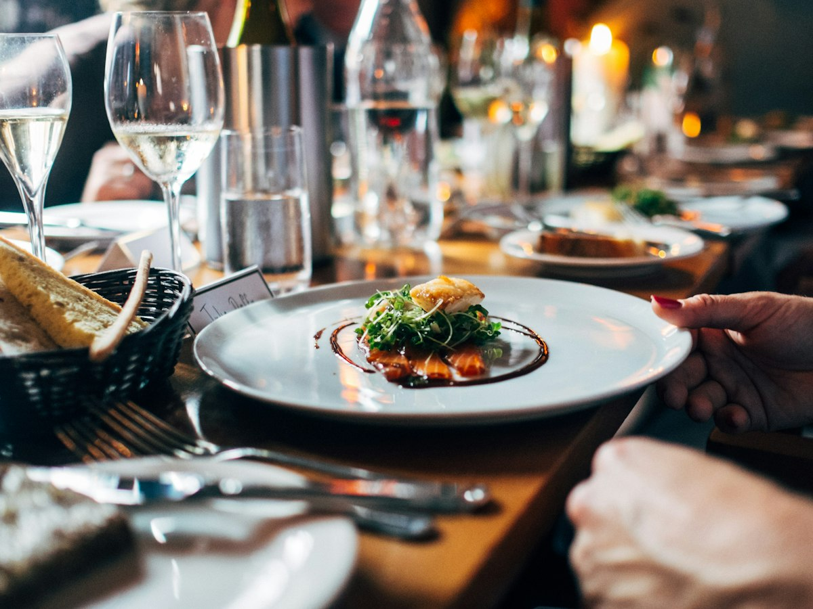

About Fork & Flame
A neighborhood kitchen in Cairo for people who like honest food.
We started Fork & Flame because we wanted a place where you can sit down for a burger, share pasta, and still have room for dessert. The menu is short on purpose: we cook fewer dishes, and we cook them well.
